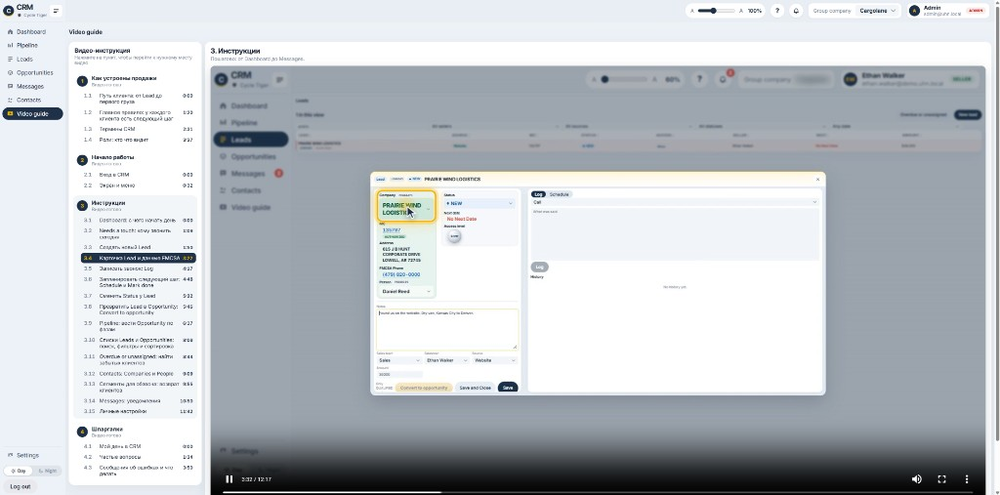
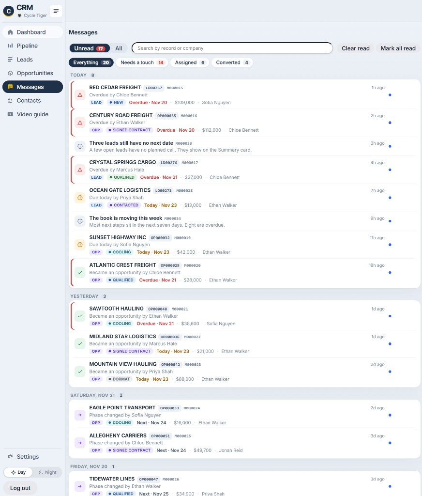
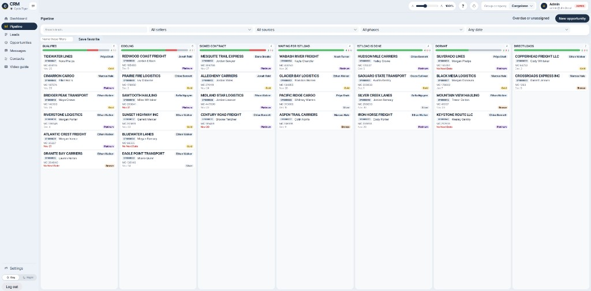

Company and people, with an MC number. Lead and opportunity. Source and segment. Salesman and sales team. One group company does not mix its book with another’s.
Cycle CRM · a simple sales book
A book the desk can use the day it opens.
Cycle CRM orders the work with each company, from the first call to the first load. It is a small system. A seller can use it without a long preparation. Management can see how much of the market the desk is actually touching. It runs with Cycle TMS, with another TMS, or on its own. The price is written after we meet.
01 · What we offer
A small system for the work with customers.
A sales desk’s day is a set of companies that have to be called, qualified, contracted, and loaded. Cycle CRM is the place that day is kept. It is deliberately small. There is a morning screen, a video guide in chapters, a list of messages, and a pipeline. A person does not have to learn a large product before the first call.
The working principle is one company, one next step. A lead is a company you have not agreed with yet. An opportunity is a company you are contracting, or a company that should already be loading. After a contact, the seller writes what happened and schedules the next step. Cycle CRM sets Next date from that step. A company with no next step is visible. A company whose date has passed is visible. That visibility is what management reads: how much of the market the desk is actually touching, and where the contact has stopped.
Needs a touch, due today, overdue, and no next date. Green is a step today or later. Red is a date that has passed. Gray is no step at all.
A lead moves New, Attempted, Contacted, Qualified, On hold, or Not qualified. Convert keeps the history and opens an opportunity: Qualified, Cooling, Signed contract, Waiting for 1st load, 1st load is done. Dormant and Direct loads sit beside that path. An administrator can rename the list. The next step stays.
The log is the history: call, email, meeting, task. Messages tell the people who need them. A seller sees their own book. A manager sees the group. A viewer looks. An admin sets the users, the teams, and the import. An MC number fills address, phone, and license status from the public FMCSA record.
02 · The four screens
Dashboard, guide, messages, and the pipeline.
A day is run from these four screens. The pictures are a demo book, used to show the product. They are not a carrier’s result.
01 · Dashboard
The morning, and the contact with the market.
Open leads, open opportunities, companies with no next date, overdue, and due today. Needs a touch is who to call. The salesmen table shows each person’s book and how much of it is late. Management does not ask around. The degree of contact with the market is on this screen.
02 · Video guide
The instruction is already in the system.
Chapters, with a time on each one. How a sale is built. How to start. The card, the FMCSA record, the log, the next date, the conversion, the pipeline. A new seller opens the chapter for the step they are on. There is no course to finish before the first call.

03 · Messages
The desk is told what changed.
A company is overdue. A lead became an opportunity. A phase moved. Unread stays until someone reads it. The book does not depend on a person remembering to ask what happened.

04 · Pipeline
Every opportunity is on one board.
Qualified, Cooling, Signed contract, Waiting for 1st load, 1st load is done. Dormant and Direct loads sit beside that path. A card names the company, the owner, and the next date. Color shows whether the contact is on time. Management sees the market as a board, not as four inboxes.

03 · What a sales desk lives with
The book loses the company in the gaps.
These are the breaks between the first call and the first load. They show up in a carrier that sells freight all day.
Two weeks later nobody knows they spoke, what the company moves, or when to call back.
Each thinks the company is theirs. The shipper hears the pitch twice.
June arrived. The date was in a chat, or in a notebook that stayed in a drawer.
Interest was real. The contract never started, because nobody saw the conversation slow down.
Soon has no date. Dispatch never hears the name, or hears it once and loses it.
The companies were in one person’s head. The next seller starts from a list of names.
Volume dropped. They are no longer a lead, so nobody put them back on a call list.
04 · How Cycle closes them
Each gap has a rule on the company.
The schedule sets Next date. Needs a touch is the morning list. Overdue or unassigned finds the companies the desk has dropped.
A seller sees the companies they own. A manager assigns inside the group. Two people do not work the same company by accident.
A pause is a status, and the return date is a scheduled step. The company comes back on that day.
It stays on the pipeline until someone moves it. A slow deal is still a deal with a next step.
Signed contract is not the end of the record. The next phase names the load that has not happened yet, and it has a date.
Call, email, meeting, and task record who wrote them and when. A new seller reads the book. They do not inherit a notebook.
A segment, such as a volume drop, puts a company that already loads back on a list. The book is not only the companies you have never met.
05 · What to expect
A desk that can account for the book.
The result is not a new slogan for the same spreadsheets. It is a morning you can call from, and a week you can explain.
Needs a touch is who is due. The goal is no red and no gray: no overdue step, and no company left without one.
The book has a salesman. A manager can see overdue by person without asking each person.
A lead becomes an opportunity when it is qualified. The history comes with it.
After the signature, the phase is the first load. The company stays on the board until that load is done.
Open leads, overdue, due today, and each salesperson’s share. Management sees where the desk is touching the market, and where it has stopped.
06 · How it connects
With Cycle TMS, with another TMS, or on its own.
Cycle CRM is its own product. The sales book does not require a dispatch system. When you have one, we name the moment the company leaves the book and becomes a load. One of the three is the one we recommend when dispatch will run on Cycle.
With Cycle TMS
Cycle CRM and Cycle TMS are made by the same company and put in by the same people. The company is sold in the CRM. The load is dispatched in the TMS: the truck, the rate confirmation, the POD, and the invoice stay on the order. The handoff is the signed contract, or the first load. We set that point when both systems go in, so dispatch does not retype the customer and sales can see that the first load happened.
Advantage
One company, from the first call to the paid order. The people who designed both systems are the people who put them in.
Disadvantage
This path assumes dispatch will run on Cycle TMS. If the trucks stay on another system, use the next one.
With another TMS
Cycle CRM keeps the sales book. Your TMS keeps the trucks and the orders. We agree the handoff, usually at signed contract or at the first load, and we write who moves the customer across. The CRM does not replace the dispatch system you already run.
Advantage
The desk gets a book with a next step. Dispatch keeps the system it already knows.
Disadvantage
The two systems meet at a handoff. They are not one database. Someone owns that step, and the proposal names them.
On its own
Cycle CRM runs the sales desk with no TMS behind it. Leads, opportunities, contacts, the next step, and the path through the first load. When a TMS comes later, the book is already a book, and we connect it then.
Advantage
A sales office can start before dispatch is ready to change systems.
Disadvantage
The first load is recorded in the CRM. It is not proved by a rate confirmation and a POD in a TMS.
07 · How we put it in
Open it. The guide is already inside.
The system is simple enough to use the day a person is given a login. The video guide is part of the product. A separate course is not required before the first call. When an old book has to be moved, or a TMS has to be connected, that is extra work, and we do it with you.
The system, with the guide
You receive Cycle CRM. Sellers, companies, and the path are set up. People work from the chapters already in the system: the card, the next date, the conversion, the pipeline.
Advantage
No long preparation. A seller can take a company through a call and a next step on the first day.
Disadvantage
The old book stays where it is until your people enter it. A habit that still lives in a chat stays in a chat until the desk chooses to write it down.
A day beside the desk
The same system, and we sit with the people for the first day. We use your companies, not a generic tour.
Advantage
The first real calls are made with someone who already knows the screens.
Disadvantage
We show the product. We do not rebuild how the office sells, and we do not bring the old book across for you.
The book moved in
We look at how you sell, put the companies that matter into Cycle, and leave the desk running. If Cycle TMS or another TMS is in scope, the handoff is part of this work.
Advantage
The history that matters is already in, and the people have run a real day on it. One to three months, set by how much has to move.
Disadvantage
It takes longer, and it asks more of the sellers while we are in the office. It is the path when the current book is still held together by memory.
08 · What the price depends on
The number is in the proposal.
There is no price on this page. The work is not the same for every carrier. We name the number after the initiating meeting, in the proposal.
The system with the guide already in it, a day beside the desk, or the old book moved in.
With Cycle TMS, with another TMS, or on its own. A handoff into a dispatch system is more work than a sales book alone.
A desk with a settled way to qualify a company, assign an owner, and watch the first load is a different job from a desk that still decides this in a chat.
Companies, people, open leads, and open opportunities. A long history is more work than a clean start.
The product does not require a long preparation. A first day beside the desk, or a move of an old book, is a different job from handing over the login and the guide.
We go through this at the initiating meeting. The price you can act on is the one in the proposal, after that meeting.
09 · About us
We have sold the freight, and we built the system.
Cycle CRM is made by Unique for Logistics LLC, the same company that makes Cycle TMS. Andrii Karpachov, Chief Technology Officer, designed it with his team. The people on that team have spent their careers on the desk, on expedited freight, and on the software a desk can actually run.
A company is called, a next step has to exist, the contract has to be real, and the first load has to come back to the company that was sold. We have worked that day. We know where it breaks when the call, the owner, and the load live in different places.
This freight does not wait for someone to reconstruct the book from a chat. The company that was promised a call this week, and the company waiting on a first load, have to be the same story while the week is still open.
We build the system the desk uses. The rules in Cycle are the rules of that day, written down: a company has a next step, one salesman holds it, and a signed contract is still waiting until the first load is done.
We know how this work is done, and we know how the system has to behave for the book to stay honest. When Cycle goes into an office, the people who designed it are the people who put it in. There is no separate crew reading from a script.
10 · How support works once you are on Cycle
A question from a live day comes back to us.
Support starts when your people are selling in Cycle. It is not a separate product you turn on later. The team that set the system up remains the team you write to, at info@cycletiger.com. If Cycle TMS is in the same office, that is the same team.
From the desk, send the company name, what the screen shows, and what you expected to happen. We already know your sellers, your statuses, and the way a deal was set to move. You are not explaining the company from the beginning.
A company that looks owned and should not. A next date the seller cannot move. A lead that will not convert. A phase that does not match the contract. A report that does not match the week you just ran. A new person who needs the step shown on your book.
We open that company with you. We walk the step: what the status allows, where the next date comes from, and what the morning list should show after it. If the record was entered wrong, we correct it with you. If the question is how Cycle is meant to be used, the answer is on your system.
A new way of working, or a new handoff into a TMS, is not closed inside a support reply. We meet, the same way as the first time, and the change goes into a proposal.
The first meeting.
Tell us the company, how a deal moves today, and whether the book should meet Cycle TMS, another TMS, or stand on its own. We use that meeting to see the process, the book, and the people. The proposal, including the price, comes after it.